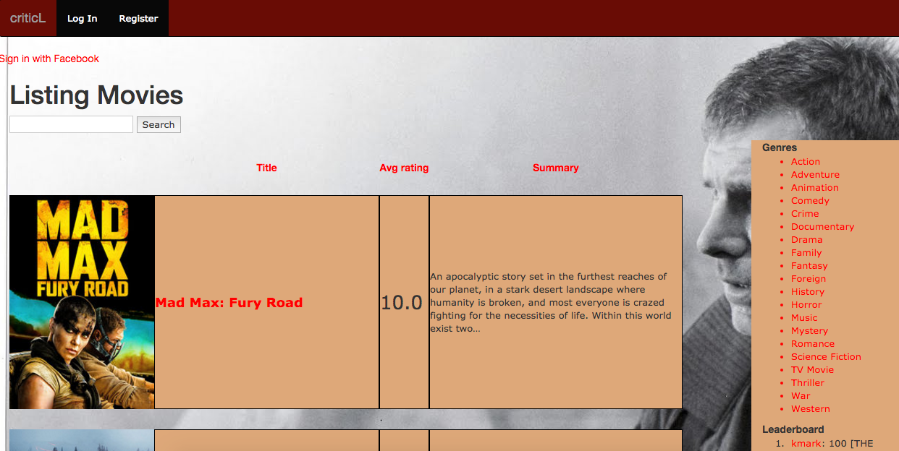

A mobile personal assistant solution for the professional chef. Developed with React Native and Rails.

Comprehensive movie database, with fully integrated search features, user ratings, reviews, and Facebook login. Developed with Rails and Bootstrap.